Stochastic chaos and turbulent attractors in Earth-system models and ocean-atmosphere interactions
tuRbulence provides stochastic dynamical systems analyses for studying turbulent attractors with Ornstein-Uhlenbeck colored noise forcing, with emphasis on Earth-system models and ocean-atmosphere interactions. Includes seven systems: Lorenz-63 and Lorenz-84, Rössler, Stommel two-box thermohaline circulation, Charney-DeVore atmospheric blocking (3-mode and 6-mode), Hasselmann stochastic-climate model, and the Faranda et al. (2017) stochastic Duffing model for von-Karman turbulent swirling flow. Provides attractor reconstruction via delay and peak embedding, Lyapunov-exponent estimation (Wolf and Rosenstein algorithms), embedding-dimension estimation (Cao’s method), and interactive 3D visualization. Streamlined with Rcpp and C++/OpenMP.
Note on the von-Karman family. The functions
vonkarman_sim,vonkarman_batch,vonkarman_peaksandvonkarman_attractorintegrate the stochastic Duffing oscillator of Faranda, Sato, Saint-Michel et al. (2017) “Stochastic chaos in a turbulent swirling flow” (Phys. Rev. Lett. 119, 014502, doi:10.1103/PhysRevLett.119.014502), used as a phenomenological reduced model for the experimental observables of the von-Karman swirling-flow turbulence cell. They do NOT solve the Navier-Stokes equations and are not a Galerkin truncation of the von-Karman vortex street. See?vonkarman_simfor the equations.
What is inside
| Layer | Components | Count |
|---|---|---|
| Unified dispatcher |
turbulence_sim, simulate_system, get_primary_series
|
3 |
| Canonical chaotic systems |
lorenz_sim, lorenz84_sim, rossler_sim
|
3 |
| Geophysical and climate systems |
charney_devore_sim, charney_devore_6mode, charney_devore_batch, stommel_sim, stommel_batch, hasselmann_sim, hasselmann_batch, vonkarman_sim, vonkarman_batch, vonkarman_peaks, vonkarman_attractor
|
11 |
| Phase-space reconstruction |
turbulence_embed, turbulence_cao
|
2 |
| Lyapunov spectra | turbulence_lyapunov |
1 |
| Bifurcation analysis |
turbulence_bifurcation, plot_bifurcation_panel
|
2 |
| 3D visualization |
create_attractor_3d, create_trajectory_3d, create_animated_attractor, create_animated_attractor_accumulate, save_attractor_html, export_animation_frames
|
6 |
| Interactive dashboard | shiny_tuRbulence |
1 |
| S3 classes (with print, summary, plot) | 18 simulator and analysis classes | 18 |
The package ships canonical-validation regression tests (tests/testthat/test-validation-canonical.R) that pin Lorenz-63 (lambda_1 ~ 0.906 from both Wolf and Rosenstein), Rossler (lambda_1 ~ 0.07), Cao optimal embedding dimension on Lorenz-63, and Hasselmann stochasticity (two seeds diverge; identical seeds reproduce).
See vignette("turbulent-attractors") for theory; vignette("api") for the architecture map.
Installation
Install the development version from GitHub:
# install.packages("devtools")
# devtools::install_github("robustecologies/tuRbulence")Dynamical systems
The package implements seven dynamical systems organized into three categories:
Classical chaotic systems
Lorenz system (1963) models atmospheric convection as a simplified representation of Rayleigh-Benard flow. The butterfly attractor emerges for the standard parameters (σ = 10, ρ = 28, β = 8/3) with largest Lyapunov exponent λ₁ ≈ 0.906.
library(tuRbulence)
# Simulate Lorenz attractor
sim <- lorenz_sim(sigma = 10, rho = 28, beta = 8/3, n_steps = 100000, seed = 42)
print(sim)
#> Lorenz System Simulation
#> Parameters: σ=10.00, ρ=28.00, β=2.6667
#> Time points: 20000
#> Time span: [0, 100.00]
summary(sim)
#> Lorenz System Simulation Summary
#> ==================================================
#>
#> Parameters:
#> Prandtl number σ: 10.0000
#> Rayleigh number ρ: 28.0000
#> Geometric factor β: 2.6667
#>
#> Integration:
#> Time step dt: 0.0010
#> Total steps: 100000
#> Output points: 20000
#>
#> State variable ranges:
#> x: [-18.054, 19.563]
#> y: [-24.281, 27.183]
#> z: [0.962, 47.834]
#>
#> Estimated regime: Chaotic (strange attractor)
# 3D attractor visualization
plot(sim, type = "attractor")Rossler system (1976) exhibits a simpler attractor structure with a single scroll, useful for studying period-doubling routes to chaos. Reference Lyapunov exponent λ₁ ≈ 0.07.
sim <- rossler_sim(a = 0.2, b = 0.2, c = 5.7, n_steps = 500000, seed = 42)
plot(sim, type = "attractor")Lorenz-84 is a low-order atmospheric model capturing the interaction between westerly winds and large-scale eddies, exhibiting chaotic transitions between different circulation patterns.
sim <- lorenz84_sim(F = 8, G = 1, n_steps = 300000, seed = 42)
plot(sim, type = "attractor")Geophysical fluid dynamics
Von Karman turbulent flow implements the stochastic Duffing oscillator describing symmetry-breaking transitions in turbulent swirling flows, as observed in the von Karman experiment (Faranda et al. 2017).
sim <- vonkarman_sim(mu = 0.3, n_steps = 100000, seed = 42)
plot(sim, type = "attractor")
# Peak embedding for attractor reconstruction
peaks <- vonkarman_peaks(sim, min_separation = 0.05)
attr <- vonkarman_attractor(peaks, embed_dim = 3)
plot(attr)Charney-DeVore model (1979) describes the interaction between zonal flow and planetary waves, exhibiting bistability between blocked and zonal flow regimes relevant for understanding atmospheric blocking events.
sim <- charney_devore_sim(F = 1.5, n_steps = 100000, stochastic = TRUE, seed = 42)
plot(sim, type = "phase")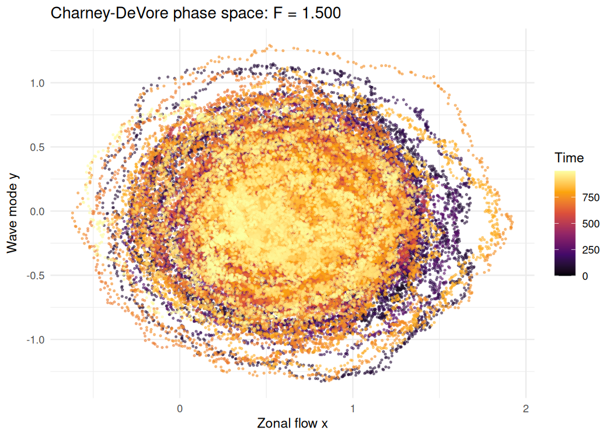
plot(sim, type = "blocking")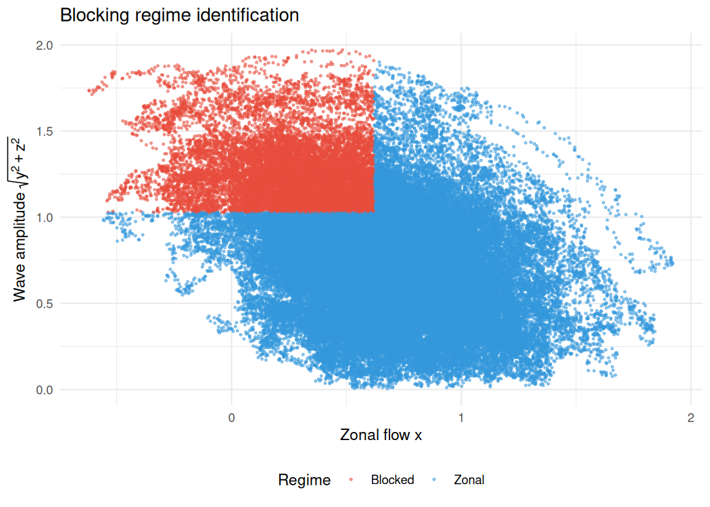
summary(sim)
#> Charney-DeVore Atmospheric Blocking Model Summary
#> =======================================================
#>
#> Parameters:
#> Forcing F: 1.500
#> Damping k: 0.100
#> Couplings: α=1.000, β=0.500, δ=1.000
#> Noise amplitude σ: 0.150
#>
#> State variable statistics:
#> x (zonal): mean=0.632, sd=0.358, range=[-0.620, 1.922]
#> y (wave1): mean=-0.072, sd=0.385, range=[-1.326, 1.292]
#> z (wave2): mean=-0.640, sd=0.426, range=[-1.872, 0.964]
#>
#> Blocking analysis:
#> Wave amplitude threshold (75th): 1.028
#> Blocked fraction: 17.9%
#> Mean wave energy: 0.744Climate models
Stommel box model (1961) describes thermohaline circulation with bistability between thermally-driven (like the modern Atlantic) and salinity-driven flow regimes, relevant for understanding abrupt climate transitions.
sim <- stommel_sim(eta2 = 1.2, n_steps = 100000, stochastic = TRUE, seed = 42)
summary(sim)
#> Stommel Box Model Simulation Summary
#> ==================================================
#>
#> Parameters:
#> Temperature forcing η₁: 3.000
#> Freshwater flux η₂: 1.200
#> Relaxation ratio η₃: 0.300
#> Noise amplitudes: σ_T=0.200, σ_S=0.200
#>
#> State variable statistics:
#> T: mean=2.421, sd=0.313, range=[1.490, 3.239]
#> S: mean=2.318, sd=0.552, range=[0.756, 3.261]
#> q: mean=0.103, sd=0.313, range=[-0.765, 1.069]
#>
#> Flow regime occupancy:
#> Thermal-dominated (q > 0): 55.4%
#> Salinity-dominated (q < 0): 44.6%
#> Regime transitions: 2866
plot(sim, type = "flow")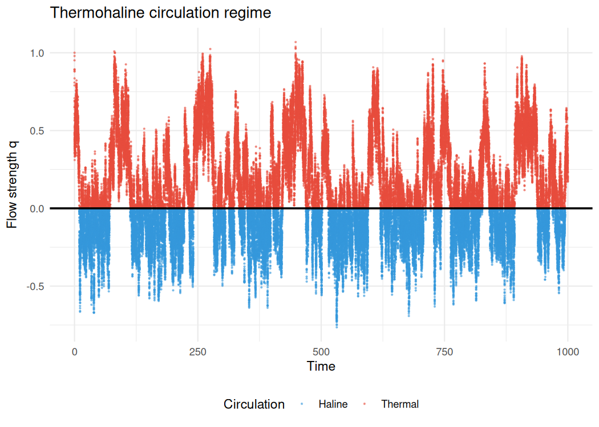
# Stommel bifurcation diagram
eta2_seq <- seq(0.5, 2.0, length.out = 31)
batch <- stommel_batch(eta2_seq, n_steps = 100000, n_threads = 4, seed = 42)
plot(batch, type = "density")
#> Picking joint bandwidth of 0.0153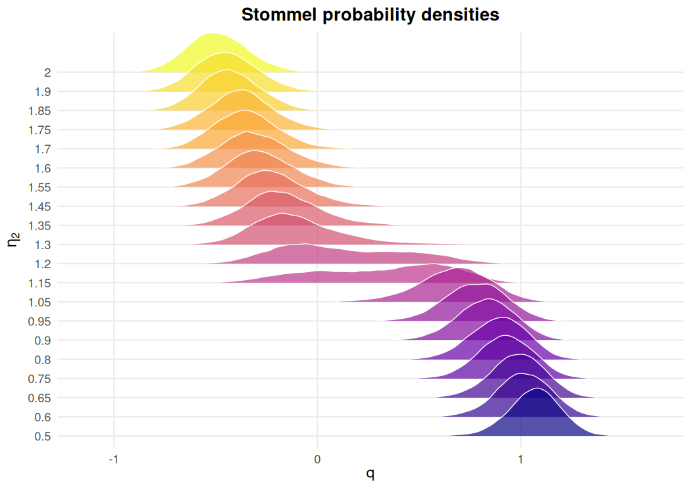
Hasselmann stochastic climate model (1976) treats the climate system as a slow integrator of fast atmospheric fluctuations, extended with ocean-ice feedbacks for glacial-interglacial dynamics.
sim <- hasselmann_sim(F_forcing = 0.5, n_steps = 50000, stochastic = TRUE, seed = 42)
plot(sim, type = "phase")
summary(sim)
#> Hasselmann Stochastic Climate Model Summary
#> ==================================================
#>
#> Parameters:
#> External forcing F: 0.500
#> Climate feedback λ: 0.100
#> Ocean exchange γ: 0.050
#> Deep ocean κ: 0.010
#> Ice coupling α: 0.100, β: 0.020, μ: 0.500
#> Noise: σ_T=0.300, σ_I=0.100
#>
#> State variable statistics:
#> T (surface): mean=4.520, sd=0.674, range=[-0.466, 6.666]
#> Td (deep): mean=4.428, sd=0.652, range=[-0.003, 5.065]
#> I (ice): mean=0.441, sd=0.340, range=[0.000, 2.271]
#>
#> Temporal characteristics:
#> Lag-1 autocorrelation: T=0.990, Td=1.000
#> T e-folding time: 9.9 time unitsAnalysis tools
Lyapunov exponent estimation
The package provides two algorithms for estimating the largest Lyapunov exponent: the Wolf algorithm (1985), the original method tracking fiducial trajectories with neighbor replacement, and the Rosenstein algorithm (1993), a faster method based on divergence tracking suitable for smaller datasets.
# Simulate Lorenz system
sim <- lorenz_sim(sigma = 10, rho = 28, beta = 8/3, n_steps = 200000, seed = 42)
# Wolf algorithm
lyap_wolf <- turbulence_lyapunov(sim, embed_dim = 10, tau = 10, method = "wolf")
print(lyap_wolf)
#> Turbulence Lyapunov Exponent (wolf algorithm)
#> λ₁: 1.1667 (per unit time)
#> λ₁: 0.005834 (per step, dt=0.0050)
#> Regime: Chaotic
#> Iterations: 3990
#> Embedding: dim=10, τ=10
# Rosenstein algorithm with divergence curve visualization
lyap_ros <- turbulence_lyapunov(sim, embed_dim = 10, tau = 10, method = "rosenstein")
print(lyap_ros)
#> Turbulence Lyapunov Exponent (rosenstein algorithm)
#> λ₁: 1.6443 (per unit time)
#> λ₁: 0.008222 (per step, dt=0.0050)
#> Regime: Chaotic
#> Iterations: 500
#> Embedding: dim=10, τ=10
plot(lyap_ros)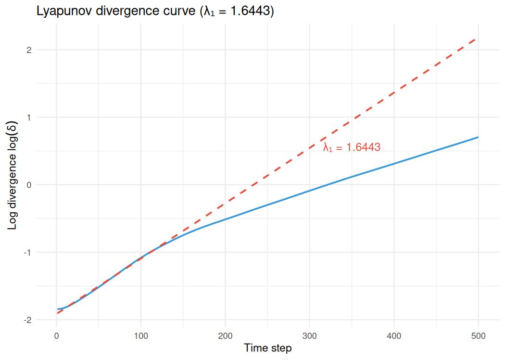
Embedding dimension estimation
Cao’s method determines the optimal embedding dimension by analyzing how false nearest neighbors decrease with increasing dimension.
sim <- vonkarman_sim(mu = 0.3, n_steps = 100000, seed = 42)
cao <- turbulence_cao(sim, max_dim = 15, tau = 10)
print(cao)
#> Turbulence Cao Dimension Analysis
#> Estimated optimal dimension: 7
#> Dimensions tested: 1-15
#> Time delay τ: 10
plot(cao)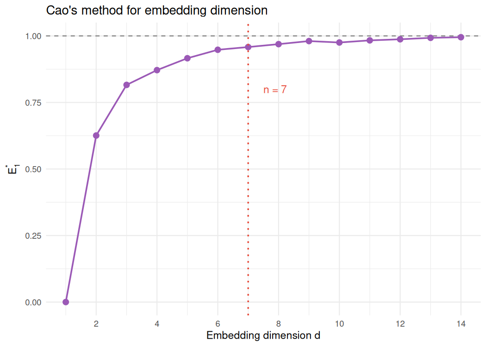
Delay embedding
Standard Takens delay embedding and specialized peak embedding for attractor reconstruction.
sim <- lorenz_sim(n_steps = 100000, seed = 42)
# Standard delay embedding
emb <- turbulence_embed(sim, embed_dim = 3, tau = 10, method = "delay")
print(emb)
#> Turbulence Attractor Embedding (delay method)
#> Embedding dimension: 3
#> Number of points: 19980
#> Time delay τ: 10
# Peak embedding (von Karman style)
sim_vk <- vonkarman_sim(mu = 0.3, n_steps = 100000, seed = 42)
emb_peaks <- turbulence_embed(sim_vk, embed_dim = 3, method = "peaks")
print(emb_peaks)
#> Turbulence Attractor Embedding (peaks method)
#> Embedding dimension: 3
#> Number of points: 149
#> Min separation: 0.100Bifurcation analysis
Compute Lyapunov exponents across parameter ranges to identify bifurcation points and regime transitions.
bif <- turbulence_bifurcation(
system = "lorenz",
param_values = seq(20, 30, by = 1),
n_steps = 50000,
embed_dim = 10,
tau = 10,
verbose = TRUE
)
#> Processing lorenz = 20.0000 (1/11)
#> Processing lorenz = 21.0000 (2/11)
#> Processing lorenz = 22.0000 (3/11)
#> Processing lorenz = 23.0000 (4/11)
#> Processing lorenz = 24.0000 (5/11)
#> Processing lorenz = 25.0000 (6/11)
#> Processing lorenz = 26.0000 (7/11)
#> Processing lorenz = 27.0000 (8/11)
#> Processing lorenz = 28.0000 (9/11)
#> Processing lorenz = 29.0000 (10/11)
#> Processing lorenz = 30.0000 (11/11)
print(bif)
#> Turbulence Bifurcation Analysis (lorenz, stochastic)
#> Parameter range: [20.0000, 30.0000]
#> Number of points: 11
#> λ₁ range: [-0.0119, 0.7325]
summary(bif)
#> Turbulence Bifurcation Summary (lorenz, stochastic)
#> Parameter range: [20.0000, 30.0000]
#> Number of points: 11
#> λ₁ statistics:
#> Min: -0.0119
#> Max: 0.7325
#> Mean: 0.4008
#> Regime classification:
#> Chaotic (λ > 0.01): 7 (63.6%)
#> Stable (λ < -0.01): 1 (9.1%)
#> Marginal: 3 (27.3%)
plot(bif)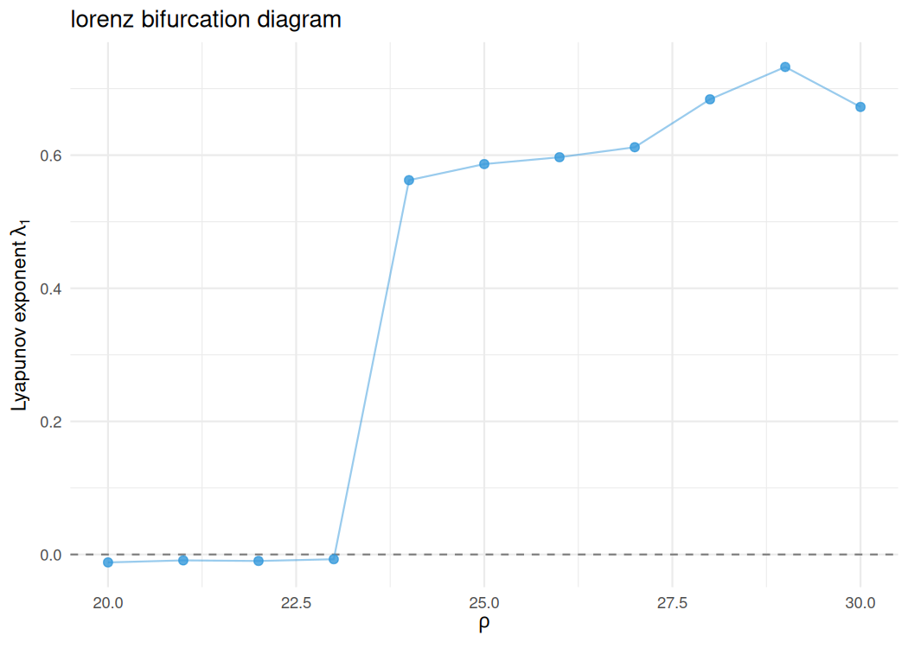
Batch simulations
Parameter sweep simulations for all geophysical systems with professional visualization.
# Von Karman bifurcation diagram
batch_vk <- vonkarman_batch(seq(-0.3, 0.3, length.out = 31), n_steps = 100000)
plot(batch_vk, type = "density") # Density ridges
#> Picking joint bandwidth of 0.062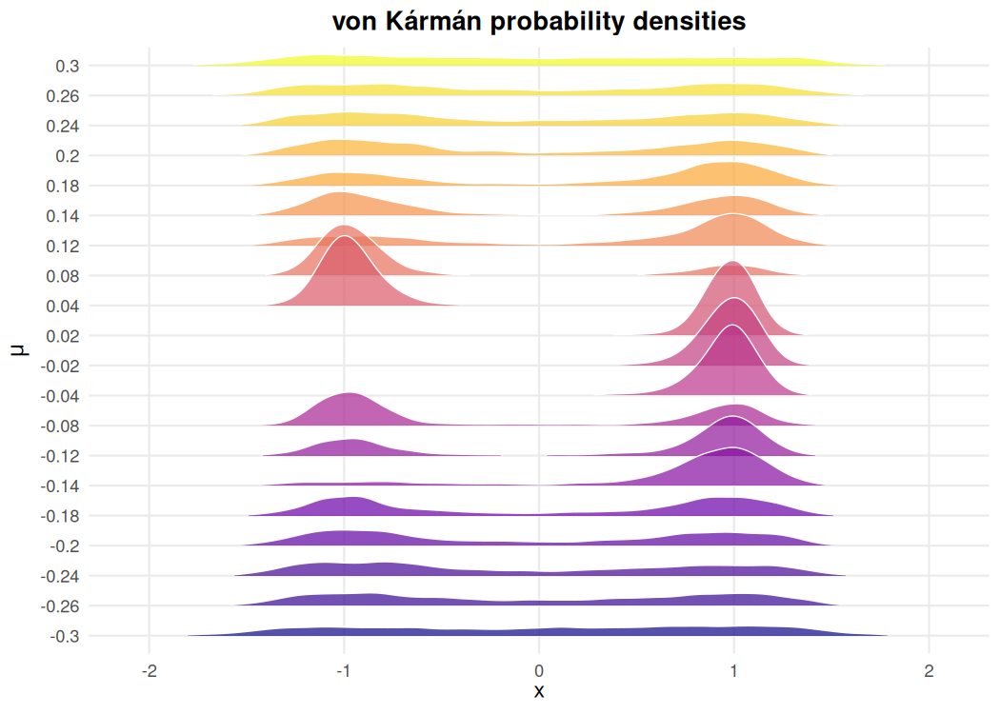
plot(batch_vk, type = "summary") # Statistical summary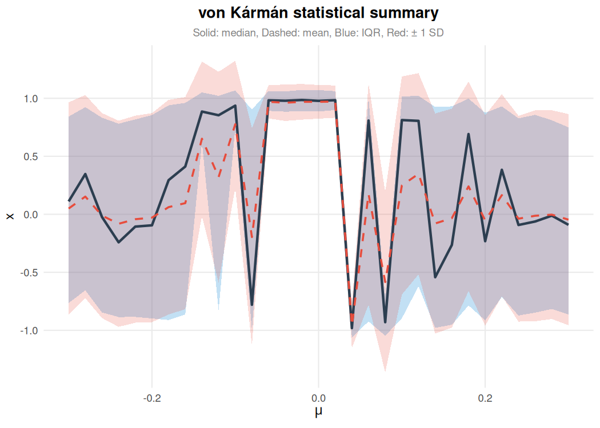
# Stommel bistability
batch_st <- stommel_batch(seq(0.5, 2.0, length.out = 31), n_steps = 100000)
plot(batch_st, var = "q", type = "density")
#> Picking joint bandwidth of 0.0149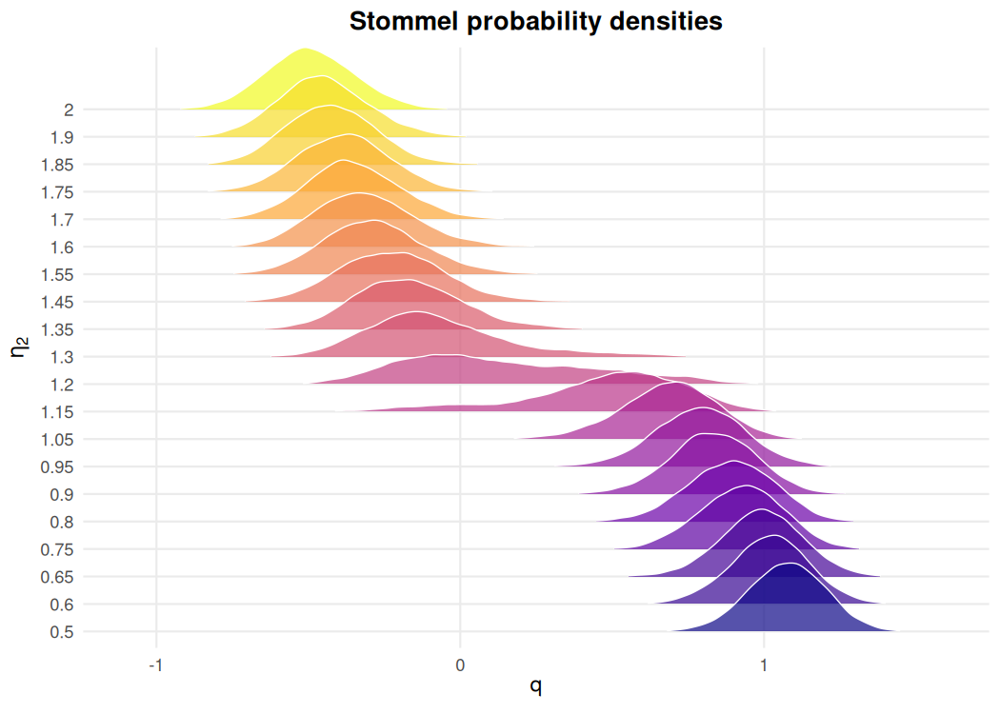
# Charney-DeVore regime transitions
batch_cd <- charney_devore_batch(seq(0.5, 3.0, length.out = 26), n_steps = 100000)
plot(batch_cd, var = "wave", type = "summary")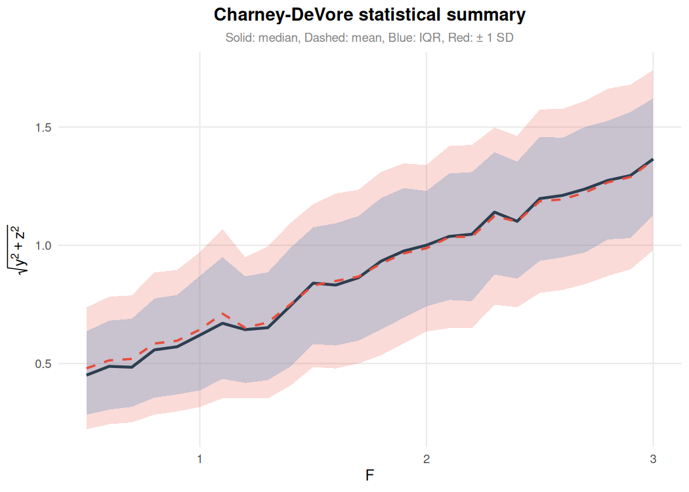
# Hasselmann climate response
batch_hs <- hasselmann_batch(seq(-1.0, 2.0, length.out = 31), n_steps = 50000)
plot(batch_hs, var = "T", type = "density")
#> Picking joint bandwidth of 0.0721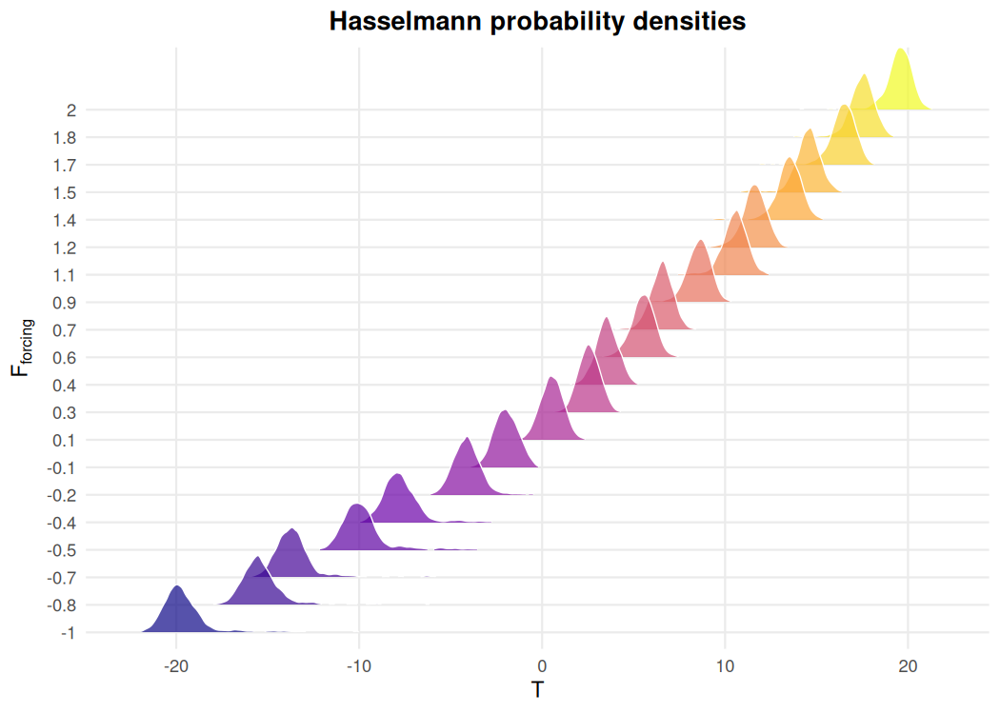
Unified interface
The turbulence_sim() function provides a unified entry point for all systems.
# Simulate any system with a single interface
sim_lorenz <- turbulence_sim("lorenz", control_param = 28, n_steps = 100000)
sim_vonkarman <- turbulence_sim("vonkarman", control_param = 0.3, n_steps = 100000)
sim_stommel <- turbulence_sim("stommel", control_param = 1.0, stochastic = TRUE)
# All simulations support the same S3 methods
print(sim_lorenz)
#> Lorenz System Simulation
#> Parameters: σ=10.00, ρ=28.00, β=2.6667
#> Time points: 20000
#> Time span: [0, 999.95]
#> Stochastic forcing: φ=1.00, σ_noise=0.100
summary(sim_lorenz)
#> Lorenz System Simulation Summary
#> ==================================================
#>
#> Parameters:
#> Prandtl number σ: 10.0000
#> Rayleigh number ρ: 28.0000
#> Geometric factor β: 2.6667
#>
#> Integration:
#> Time step dt: 0.0100
#> Total steps: 100000
#> Output points: 20000
#>
#> State variable ranges:
#> x: [-18.395, 19.556]
#> y: [-24.957, 27.184]
#> z: [0.964, 46.753]
#>
#> Estimated regime: Chaotic (strange attractor)
plot(sim_lorenz, type = "attractor")Visualization
All simulation objects support consistent S3 methods with multiple plot types.
sim <- lorenz_sim(n_steps = 100000, seed = 42)
# Time series
plot(sim) # Default: first variable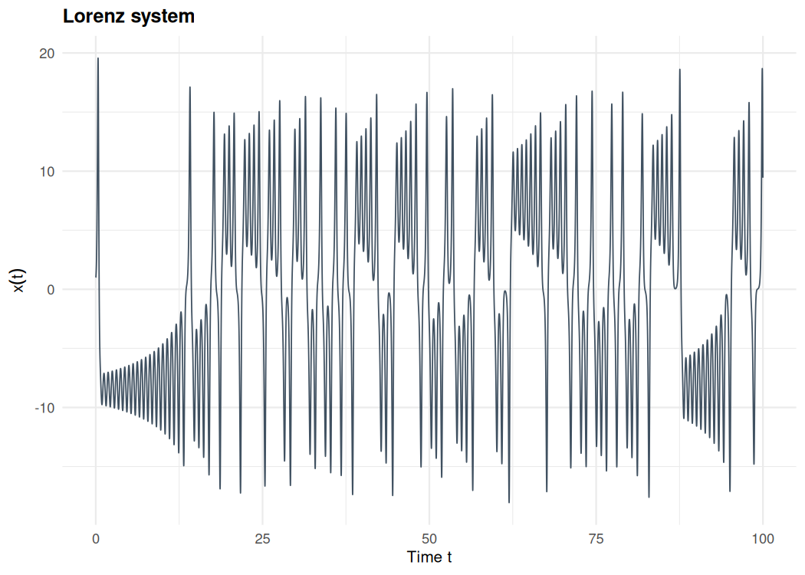
plot(sim, type = "timeseries", var = "z")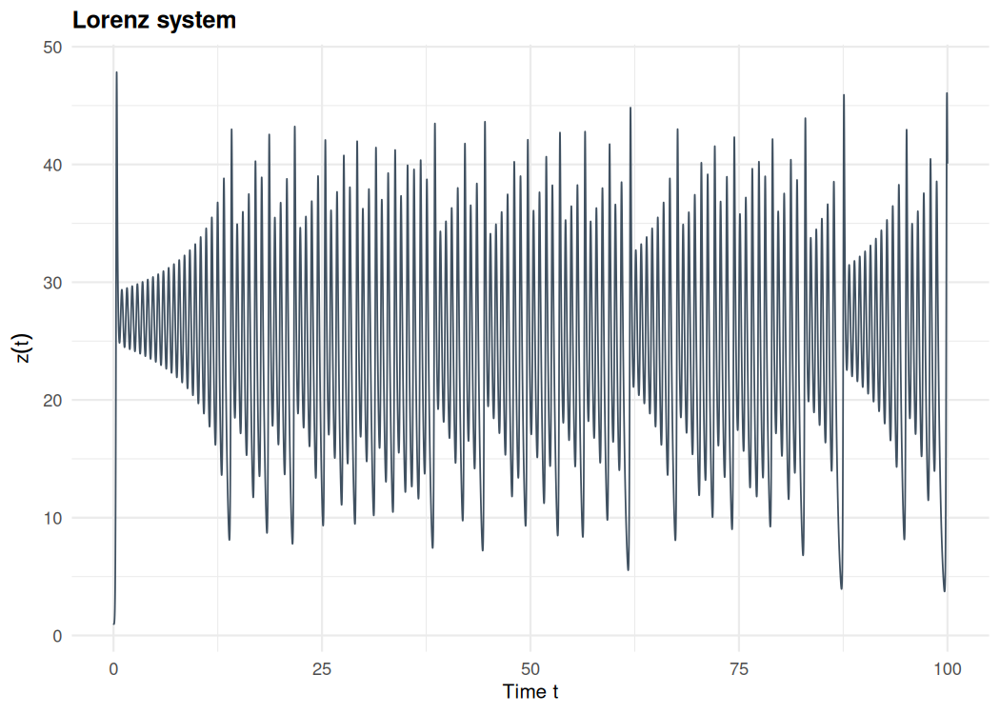
# Phase portraits
plot(sim, type = "phase") # 2D projection (x vs y)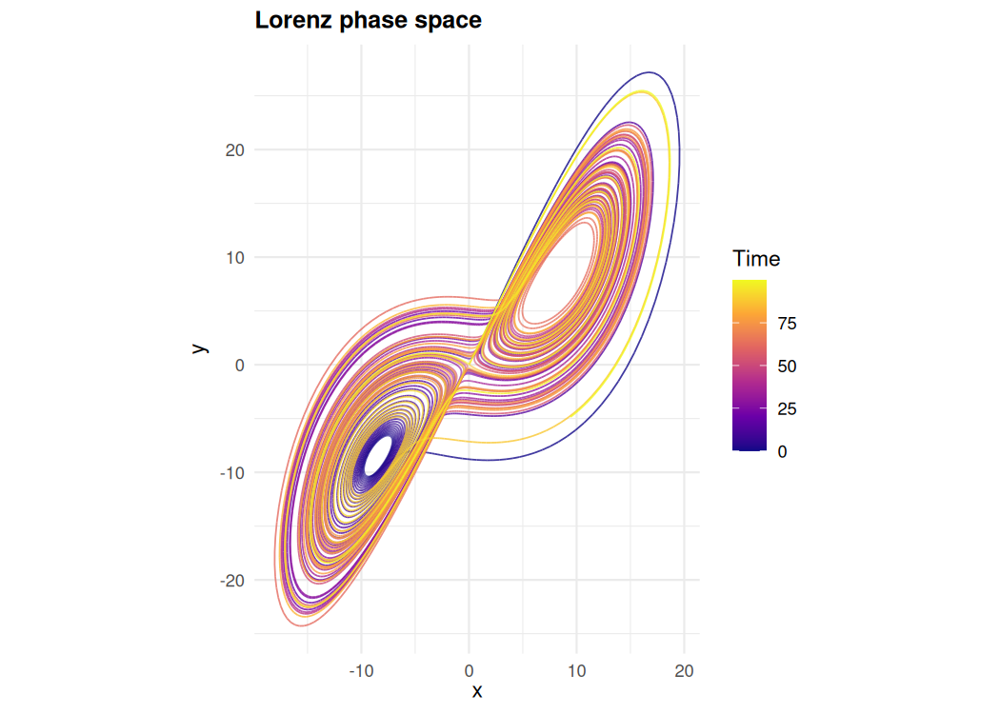
# 3D attractor (interactive plotly)
plot(sim, type = "attractor")Performance
The core integration routines are implemented in C++ via Rcpp for high performance. All systems use either 4th-order Runge-Kutta (deterministic) or Euler-Maruyama (stochastic) integration. OpenMP parallelization is available for batch simulations and Cao’s method when multiple threads are specified.
References
Faranda, D., Sato, Y., Saint-Michel, B., Wiertel, C., Padilla, V., Dubrulle, B., & Daviaud, F. (2017). Stochastic chaos in a turbulent swirling flow. Physical Review Letters, 119(1), 014502. doi:10.1103/PhysRevLett.119.014502
Lorenz, E.N. (1963). Deterministic nonperiodic flow. Journal of the Atmospheric Sciences, 20(2), 130-141. doi:10.1175/1520-0469(1963)020<0130:DNF>2.0.CO;2
Rossler, O.E. (1976). An equation for continuous chaos. Physics Letters A, 57(5), 397-398. doi:10.1016/0375-9601(76)90101-8
Stommel, H. (1961). Thermohaline convection with two stable regimes of flow. Tellus, 13(2), 224-230. doi:10.3402/tellusa.v13i2.9491
Charney, J.G. & DeVore, J.G. (1979). Multiple flow equilibria in the atmosphere and blocking. Journal of the Atmospheric Sciences, 36, 1205-1216. doi:10.1175/1520-0469(1979)036<1205:MFEITA>2.0.CO;2
Hasselmann, K. (1976). Stochastic climate models. Part I: Theory. Tellus, 28, 473-485. doi:10.3402/tellusa.v28i6.11316
Wolf, A., Swift, J.B., Swinney, H.L. & Vastano, J.A. (1985). Determining Lyapunov exponents from a time series. Physica D, 16(3), 285-317. doi:10.1016/0167-2789(85)90011-9
Rosenstein, M.T., Collins, J.J. & De Luca, C.J. (1993). A practical method for calculating largest Lyapunov exponents from small data sets. Physica D, 65(1-2), 117-134. doi:10.1016/0167-2789(93)90009-P
Cao, L. (1997). Practical method for determining the minimum embedding dimension of a scalar time series. Physica D, 110(1-2), 43-50. doi:10.1016/S0167-2789(97)00118-8
Disclaimer
This package is the original creation of the author in all conceptual, theoretical, and design aspects. Implementation was assisted by Anthropic’s Claude Code (Opus 4.5) to streamline package development. All original ideas, creativity, and scientific contributions belong to the author, who maintains full responsibility for the package’s correctness and reliability. All code has been thoroughly tested, and users are encouraged to report any issues through the package’s issue tracker.